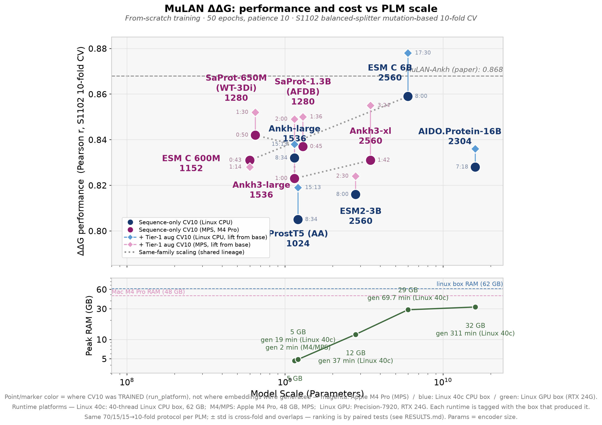
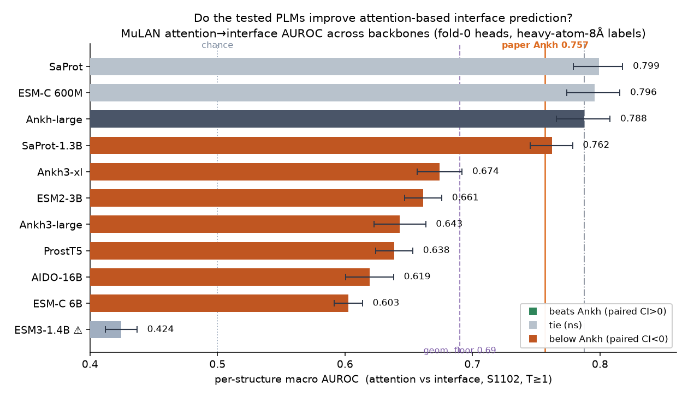
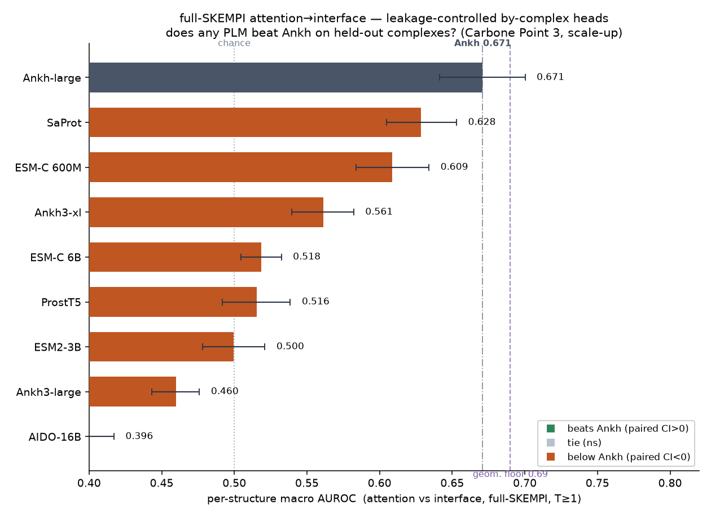

Comparison · Performance vs PLM scale
ΔΔG performance vs PLM scale (CV10, pooled Pearson)
In pooled Pearson on per-mutation 10-fold CV, every backbone sits near the paper's MuLAN-Ankh 0.868 and ESM-C 6B tops it — scaling looks like a clean win. Two training regimes are shown: a quick screen, and the converged run the rest of the deck is built on — the numbers shift slightly between them (e.g. ESM-C 6B base 0.859 → 0.881).
① Quick screen — 50 epochs, patience 10 · + Tier-1 sequence-aug arm · includes the peak-RAM / gen-time cost panel

② Converged run — 300 epochs, patience 30 · seed-42 balanced (equal-fold) · this is panel 1 of the next slide and the basis for the per-structure ladder · + FoldX-MLP arm · adds ESM2-3B paper line (0.854) + MINT

y = ΔΔG Pearson r (S1102 CV10) · x = model scale
Dataset & methodology · What the metric actually covers
Per-structure Spearman averages over the well-sampled complexes
ρ is a macro-average over complexes with ≥10 mutations (T≥10) — the filter keeps ~81–88% of mutations but only a minority of complexes, the unit averaged over (S+M 121/337 = 36% · S1102 24/110 = 22%). Tile = complex, area ∝ mutations; teal = scored, grey = dropped. Toggle the split.

source: split test folds + S1102_filtered.tsv · matches results_matrix_ps.csv (T≥10 counts 121 / 96 / 43 / 24)
Interaction sites · PLM comparison
Interface prediction across PLM backbones
Across 11 backbones (S1102) and the leakage-controlled full-SKEMPI set, no PLM significantly beats Ankh-large; ESM-C 6B and AIDO-16B land near the bottom.

